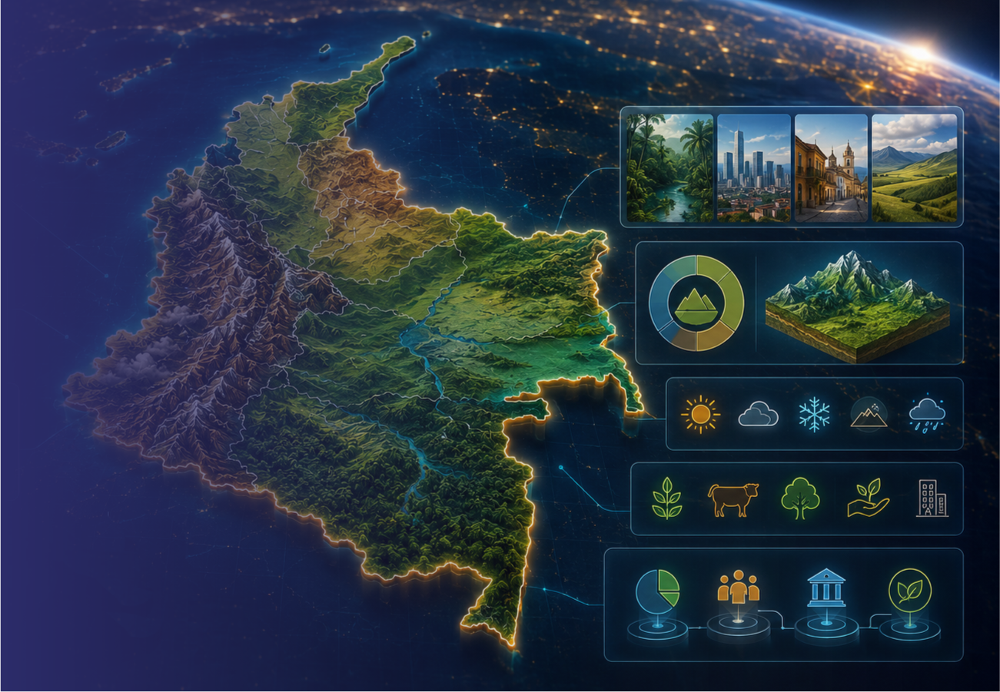

CARACTERIZACIONES
TERRITORIALES
Visitar plataforma
¿Qué son?
La caracterización territorial es un análisis integral de los entes territoriales en el cual se incluye información relacionada con: su localización en el territorio nacional; estado de los límites municipales y fronteras; ordenamiento territorial, para conocer el estado de los POT; contexto legal relacionado con las determinantes y condicionantes que definen el adecuado uso del suelo; también analiza los procesos biofísicos teniendo en cuenta variables como altitud, pendiente, relieve, clima, ecosistemas, cobertura vegetal, amenazas naturales, entre otros.
Además, se estudia el proceso relacionado con la población y su territorio, la distribución, el crecimiento, áreas, tamaño de los predios, condiciones de seguridad, así mismo las actividades económicas, infraestructura y el acceso a servicios básicos como educación y salud. Lo anterior brinda elementos clave para los procesos catastrales y de planificación territorial.
